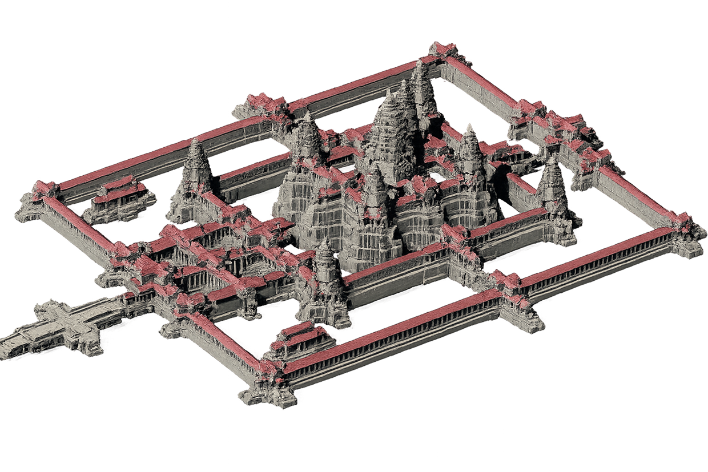
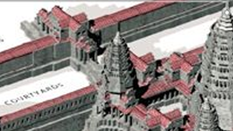
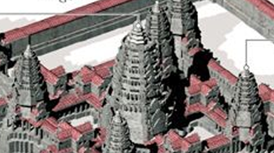
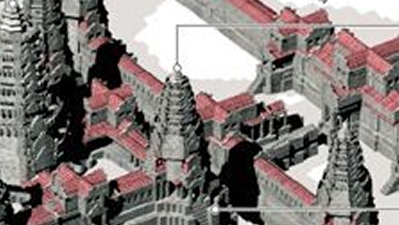
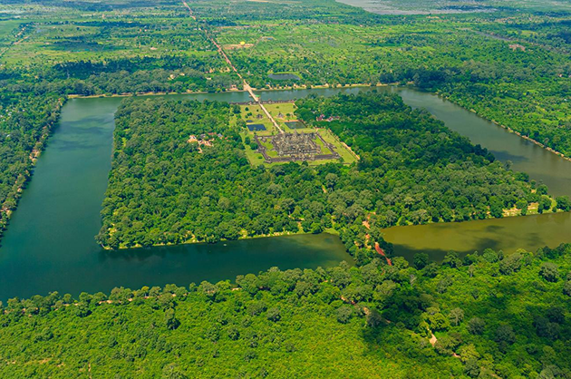

ស្រាយអាថ៌កំបាំងអង្គរវត្ត
អង្គរវត្ត គឺជាប្រាសាទដ៏ធំបំផុត និងត្រូវបានអភិរក្សទុកបានល្អបំផុត ក្នុងតំបន់អង្គរ និងជាស្នាដៃស្ថាបត្យកម្មដ៏អស្ចារ្យបំផុតមួយរបស់អរិយធម៌ខ្មែរ។ សំណង់នេះត្រូវបានទទួលស្គាល់ជាសម្បត្តិបេតិកភណ្ឌពិភពលោក និងជានិមិត្តរូបនៃប្រទេសកម្ពុជា។

កំពូលខាងឆ្វេង៖
កំពូលនេះស្ថិតនៅខាងឆ្វេងនៃកំពូលកណ្តាល។

- តំណាងឱ្យកំពូលមួយនៃភ្នំព្រះសុមេរុ។
- ជាផ្នែកនៃរចនាសម្ព័ន្ធបញ្ចកោណ។
- បង្ហាញពីសមាមាត្រស្ថាបត្យកម្មដ៏ល្អឥតខ្ចោះរបស់ខ្មែរ
- កំពូលនេះភ្ជាប់ទៅកំពូលកណ្តាលតាមរយៈសាលាដើរ និងទីធ្លាខាងក្នុង។
កំពូលកណ្ដាល៖
កំពូលនេះខ្ពស់ជាងគេនិងសំខាន់នៅក្នុងប្រាសាទអង្គរវត្ត

- កម្ពស់ប្រហែល ៦៥ ម៉ែត្រ (២១៣ ហ្វីត)។
- ស្ថិតនៅចំកណ្តាលនៃប្រាសាទ។
- តំណាងឱ្យកំពូលកណ្តាលនៃភ្នំព្រះសុមេរុ។
- ជាទីស្នាក់នៅរបស់ព្រះវិស្ណុតាមជំនឿហิណ្ឌូ។
- បច្ចុប្បន្នជាកន្លែងសក្ការបូជាព្រះពុទ្ធ។
កំពូលខាងស្ដាំ៖
កំពូលនេះស្ថិតនៅខាងស្តាំនៃកំពូលកណ្តាល។

- តំណាងឱ្យកំពូលមួយទៀតនៃភ្នំព្រះសុមេរុ។
- រួមជាមួយកំពូលផ្សេងៗបង្កើតជាទម្រង់ផ្កាប្រាំ
- ជានិមិត្តរូបនៃសកលលោកតាមជំនឿសាសនាហិណ្ឌូ
- កំពូលនេះភ្ជាប់ទៅកំពូលកណ្តាលតាមរយៈសាលាដើរ និងទីធ្លាខាងក្នុង។

ស្រះទឹកព័ទ្ធជុំវិញ ប្រាសាទអង្គរវត្ត
ស្រះទឹកនេះមាន ទទឹងប្រហែល ១៩០ ម៉ែត្រ ព័ទ្ធជុំវិញផ្ទៃដីជាង ២០០ ហិកតា មានរាងចតុកោណកែងជុំវិញប្រាសាទទាំងមូល។ ដោយសារទំហំដ៏ធំរបស់វា ស្រះទឹកនេះមើលទៅដូចជាបឹងធម្មជាតិមួយដែលព័ទ្ធជុំវិញប្រាសាទ។
ស្រះទឹកជួយរក្សាសំណើមក្នុងដីជុំវិញប្រាសាទ។ វាជួយ ការពារការរីងស្ងួតនៃដី កាត់បន្ថយការរលំស្រុត និង រក្សាលំនឹងគ្រឹះប្រាសាទអស់រយៈពេលជាច្រើនសតវត្ស។
អាណាចក្រខ្មែរបុរាណមានចំណេះដឹងខ្ពស់ខាងធារាសាស្ត្រ ស្រះទឹកអង្គរវត្តបានជួយ ស្តុកទឹកក្នុងរដូវវស្សា បង្ហូរទឹកលើស គ្រប់គ្រងកម្រិតទឹកជុំវិញប្រាសាទ។
ស្រះទឹកក៏មានតួនាទីជារបាំងការពារផងដែរ។ អ្នកណាដែលចង់ចូលប្រាសាទ ត្រូវឆ្លងកាត់ស្ពាន ឬផ្លូវថ្មមុនសិន។ នេះធ្វើឱ្យការការពារប្រាសាទកាន់តែងាយស្រួល។